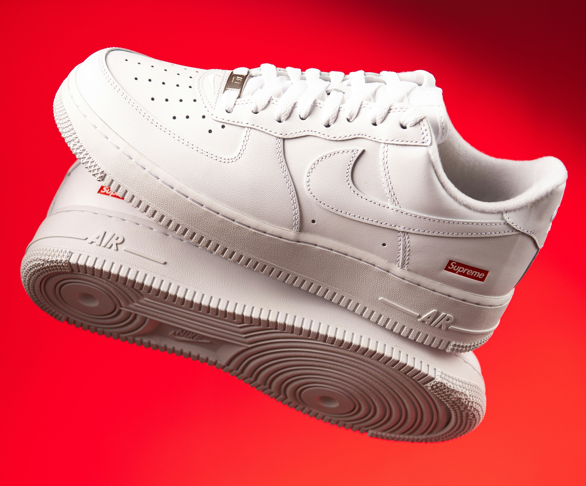

Units That Are Currently Available

Nike Air Force 1 Low Supreme White
R6,500.00
Product Description:
a minimalist collaboration featuring full-grain leather uppers, a classic rubber cupsole with Air cushioning, and subtle co-branding. The key design element is the iconic red Supreme box logo on the lateral heel, complemented by custom branded laces and a co-branded footbed.
Louis Vuitton x Supreme Keepall Bandouliere
R114,891.00
Product Description:
This 45 is an excellent weekend bag, with silvertone hardware, leather handles, a leather name tag, and a removable strap with shoulder patch, making it easy to transport wherever you go. Epi leather, debuted in 1985, became the first permanent leather by the company.